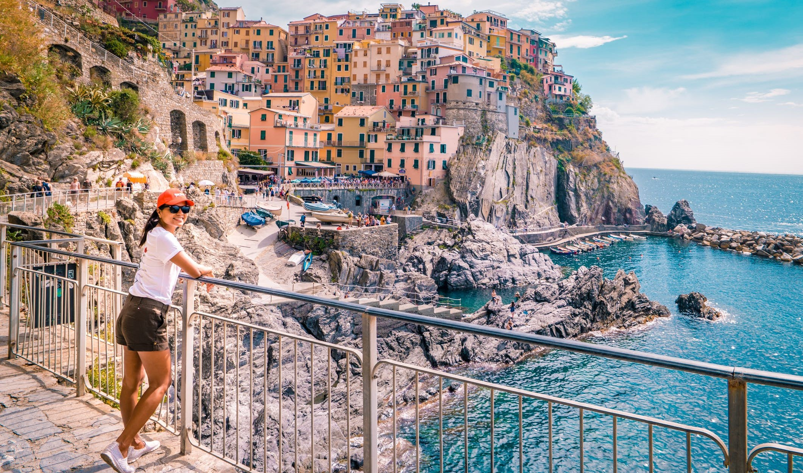
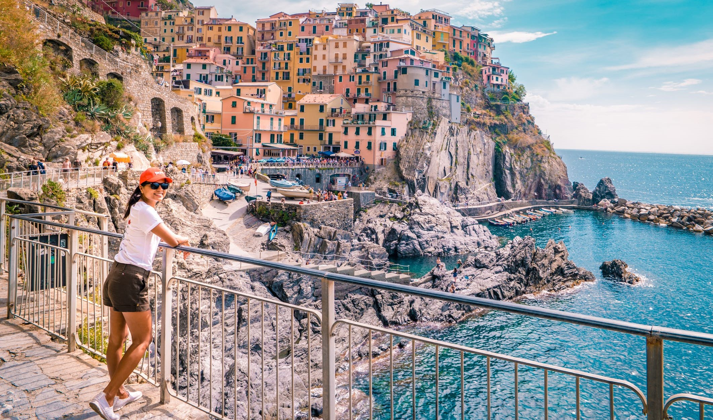

Bridges are not just a means of transportation but also a symbol of human ingenuity and engineering excellence. They connect people and places, and they have been an essential part of human history for centuries.
View More
The longest bridges in the world are mostly found in China, which has invested heavily in infrastructure development in recent years.
Read MoreThe highest bridge in the world is the Duge Bridge in China, The bridge was opened to traffic in 2016 and connects the provinces of Guizhou and Yunnan
Read MoreBrooklyn Bridge, it was the longest suspension bridge in the world. The Brooklyn Bridge connects the boroughs of Manhattan and Brooklyn by spanning the East River.
Read More
At 1,125 feet, the tallest bridge in the world opened in 2004 and can, at times, soar above the clouds. At over 8,000 feet long, Millau Viaduct spans the Tarn River Valley with seven pillars designed by Lord Norman Foster. To build the bridge in just three years, crews built the towers and then the roadway, which was slid into place atop the towers.
Millau viaduct holds the world record for the tallest bridge, culminating at 343 metres (higher than the Eiffel tower), 2460 metres long and touching the bottom of the Tarn valley in only 9 places.
Details
Completed in 2012, the 1,053-foot-tall structure became the world's longest cable-stayed bridge at more than 10,000 feet long, and it has the second-highest pylons (following the Millau Viaduct ) in the world. Just don't plan on ever needing to cross the Russky Bridge in your lifetime—it's located in a rural area of southeastern Russia near North Korea, China, and Japan.
The Russky Island Bridge is the longest cable-stayed suspension bridge in the world with a total length of 3,100m (10,200 ft). A concrete and steel construction it is 25.5m (97 ft) wide and carries four lanes of traffic on a deck 70m (230 ft) above the water.
Details
Designed for 100 years of service life, the bridge has speed limits of 100km/h for the main spans and 120km/h for land approaches. The bridge has a height of 62m, enabling fourth and fifth generation container ships to pass through in all conditions. The total length of cable used in the project is 32.2km.
At 36km (22 miles) long the Hangzhou Bay Bridge is the longest sea-crossing bridge in the world.
Details
Akashi Kaikyo Bridge, also called Akashi Strait Bridge or Pearl Bridge, The Akashi Kaikyo Bridge is 3,911 metres (12,831 feet) long and has three spans. The central span is 1,991 metres (6,532 feet) long, and each of the two side spans measures 960 metres (3,150 feet). The two main supporting towers stand 297 metres (975 feet) above the strait’s surface, making it one of the tallest bridges in the world. The central span was originally designed to be 1,990 metres (6,529 feet) long, but the Kōbe earthquake of 1995 forced the two towers, which were still under construction, more than 1 metre (3 feet) farther apart.
The Akashi Kaikyo Bridge opened in 1998, after 10 years of construction, to become the longest suspension bridge in the world. It's also the tallest suspension bridge in the world, and the most expensive, Akashi Kaikyo, the world's second longest suspension bridge, connects the island of Awaji with the city of Kobe.
DetailsChoose From a Wide Range of Properties Which Booking.com Offers. Search Now! Find What You Need At Booking.com, The Biggest Travel Site In The World. Secure Booking. 24/7 Customer Service. Villas. Flight + Hotel. Great Choice. Hotels. Hostels.
View More 


At 36km (22 miles) long the Hangzhou Bay Bridge is the longest sea-crossing bridge in the world. It spans the Hangzhou Bay at the mouth of the Qiantang River as it enters the East China Sea and connects the municipal areas of Jiaxing and Ningbo in Zhejiang province.
Qingdao Jiaozhou Bay Bridge is a 26.7 km (16.6 mi) long roadway bridge in Qingdao, Shandong province, China, which is part of the 41.58 km (25.84 mi) Jiaozhou Bay Connection Project. The longest continuous segment of the bridge is 25.9 km (16.1 mi), making it one of the longest bridges in the world.
Details
The Confederation Bridge in Canada is 8 miles (around thirteen kilometers) long, making it Canada's longest bridge. It is also the longest bridge in the world to span across iced-over water. The main purpose of the bridge is to connect Prince Edward Island to the mainland of New Brunswick (Cape Jourimain).
At its highest point, the bridge is about 200 feet (60 meters) above sea level. This allows large sea vessels to easily pass under the bridge between the piers. This is especially important for cruise ships, which is a common tourist event in the area..
Details


{kind=link}
{kind=link}
{kind=link}